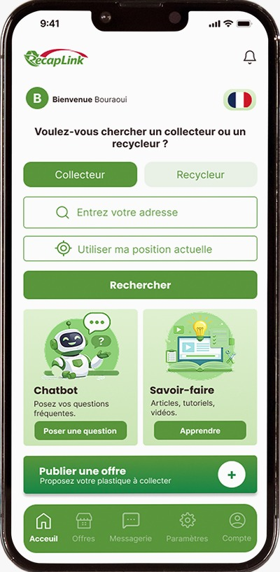
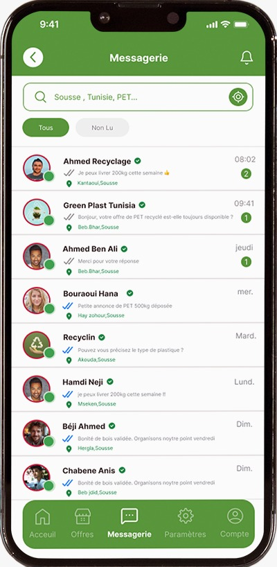
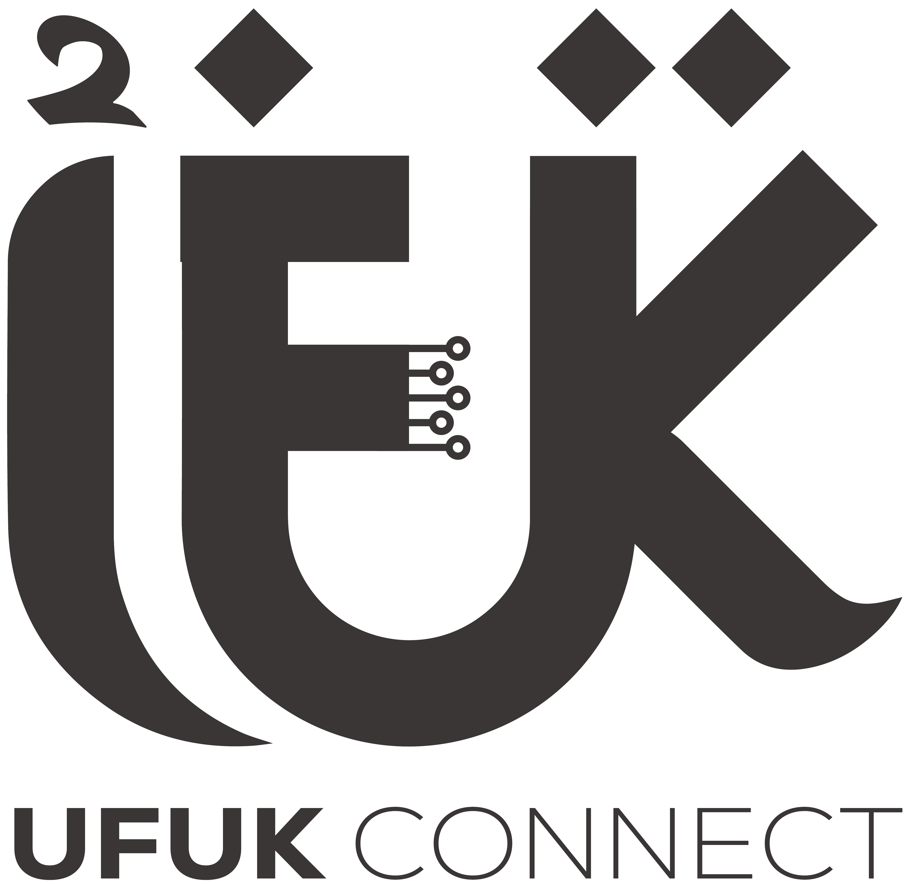

RecapLink est la première plateforme mobile dédiée au recyclage du plastique en Tunisie et au Sénégal — connectant collecteurs et recycleurs pour un impact écologique concret.

L'application mobile
Disponible sur iOS et Android, RecapLink vous accompagne à chaque étape — de la déclaration de collecte jusqu'à la mise en relation avec les recycleurs certifiés.

Ce que vous pouvez faire
Déclarez et gérez vos collectes de plastique en quelques clics, directement depuis votre téléphone.
Connectez-vous directement avec des recycleurs certifiés près de chez vous, en toute confiance.
Suivez vos offres, volumes collectés et votre impact environnemental en temps réel.
Gagnez des badges selon vos performances et contributions à l'économie circulaire.
Un chatbot disponible 24h/24 pour répondre à toutes vos questions sur le recyclage.
Contribuez directement à la réduction des déchets plastiques et à un avenir plus propre.
Notre couverture géographique
Assistance & Contact
Notre équipe est disponible du lundi au vendredi pour répondre à vos questions et vous accompagner.

Conception & développement